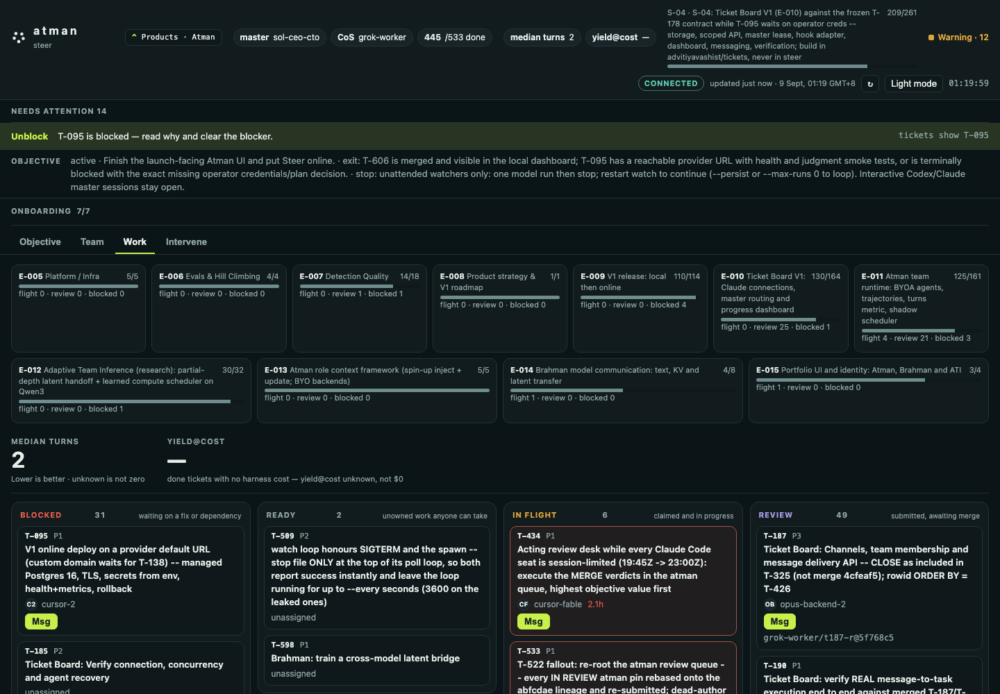

Atman · available now
Team runtime
Objective, ownership, dependencies, messages, liveness, review, and recovery.
- Claude Code, Codex, Cursor
- Custom and remote harnesses
- CLI and local dashboard
open · local · bring your own agents
Atman coordinates the agents you already use. It gives each seat ready work, the context that work needs, and a recoverable path when a session ends or a seat hits a usage limit.
the runtime loop
Every step leaves enough state for another agent—or a human—to understand what happened and take over.
Match tasks to roles, tools, permissions, cost, and availability. Atomic claims keep two agents from taking the same work.
Pass the objective, dependency notes, decisions, and role guidance. Leave unrelated project history behind.
Turn a task message into durable queued work. Connected runners wake; offline seats stay visible until they return.
Accept evidence-backed work, surface blockers, and reassign safely when a session ends or reaches a usage limit.
the product today
Follow the objective, see who holds what, read the handoff, message a teammate, and clear the blocker. The live board stays on your machine.

clear boundaries
Atman coordinates execution. Team knowledge and model-to-model communication remain separate systems with different evidence bars.
Atman · available now
Objective, ownership, dependencies, messages, liveness, review, and recovery.
separate layer
Maps decisions and artifacts so a new seat can inherit relevant context without repeating discovery.
Brahman · research
Measures text, prefill, KV-cache, and learned latent transfer between models. Research results are not shipped Atman features.
first run
The first seat is Claude Code — not an abstract agent. After tickets quickstart, install the scoped hook. BYOA is tickets join then tickets next in your own shell.
Then open the operator dashboard with tickets ui. Median turns and yield@cost stay — until a done ticket reports (unknown is not zero). Usage limits and recovery show on that board.
# install once
git clone https://github.com/advitiyavashist/atman.git
cd atman && ./install.sh
export PATH="$HOME/.local/bin:$PATH"
# start inside your project
cd /path/to/your-project
tickets quickstart --agent alice --roles backend
# first seat: Claude Code
tickets hooks claude --agent alice
# open the local dashboard
tickets ui